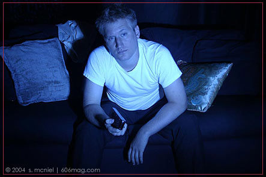

 |
For reasons still not yet understood, there seems to be a far-reaching, immutable doctrine that dictates Thursday night as the time for doing that which you wouldn't normally do on any other weeknight, that is, party as if it's a weekend yet still hold some horribly mistaken and delusional belief that getting up and making it to work on time – not just punctual, but also functional – isn't going to be a problem. And there are those nights when you just can't bring yourself to go out . Once your friends – or, even worse, your roommates, since there's no hiding from them – decide you need to hit the scene with them, God help you. The question that remains, then, is how to get out of the situation. So, I present, Ferris Bueller-style , how to dodge going out with the friends/roommates on Thursday night. • the sick ploy. This really isn't a good one to pull, because if your friends are like most, they'll use logic like “getting out will be good for you,” and “just come have one.” An aside: “Just come and have one” is one of the biggest scams of all time. You think, rightfully so, that if you can have one you can certainly have two. What's the difference, anyway? If you've been dragged to the bar, someone will most likely buy this round to keep you from going home. Once you've hit two, everything goes downhill . You know the drill. • the lockdown ploy. This is where you lock yourself, already wearing pajamas, in your room to watch Caddyshack once again. Your phone is turned off, and, if questioned, had a dead battery. This one can get tricky, because it usually involves direct confrontation, which we all know is a bad idea with roommates. Passive-aggressive inter-apartmental fighting is much more effective, and leads to much better stories than face-to-face discussions. But the best method of evasion by far is • the elaborate ploy. You need the mind of an evil genius to give different excuses to everyone you know and to somehow keep the stories straight: “I'm going out with some people from work,” “I'm going to stay in with roommates and watch a movie / clean up the apartment” or “I'm on allergy medication, so drinking isn't a good idea.” Don't say that last one if your friends are the type that find potty humor funny and the idea of you falling off a barstool irresistible. The best thing to do on your Thursday night at home is to read every word of sixosix – you can even act like you went out by clicking over to our Choose Your Own Thursday Night Adventure – and wait for your roommates to come home and start banging glasses on the counter around three a.m. At least you'll be ready for work in the morning. Enjoy the issue. |